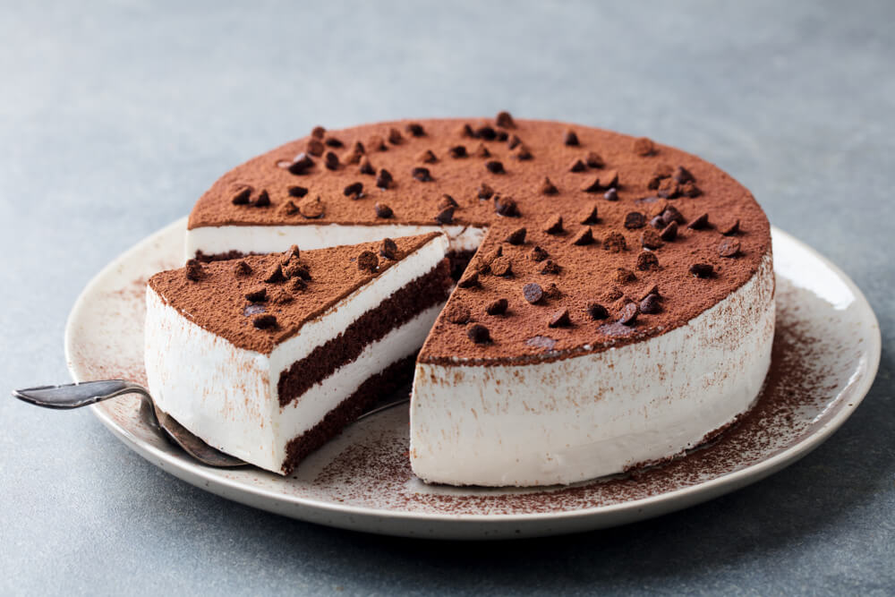

Tiramisu Layer Cake

Description
Fancy taste without all the work. This cake is wonderful for a get together or just a special occasion at home. Using a box cake mix as a base it's a real time saver!
Ingredients
Cake
- 1 (18.25 ounce) package moist white cake mix
- 1 teaspoon instant coffee powder
- ¼ cup coffee
- 1 tablespoon coffee flavored liqueur
Filling
- 1 (8 ounce) container mascarpone cheese
- ½ cup confectioners' sugar
- 2 tablespoons coffee flavored liqueur
Frosting
- 2 cups heavy cream
- ¼ cup confectioners' sugar
- 2 tablespoons coffee flavored liqueur
Garnish
- 2 tablespoons unsweetened cocoa powder
- 1 (1 ounce) square semisweet chocolate
Steps
- Preheat oven to 350 degrees F (175 degrees C). Grease and flour 3 (9 inch) pans.
- Prepare the cake mix according to package directions. Divide two thirds of batter between 2 pans. Stir instant coffee into remaining batter; pour into remaining pan.
- Bake in the preheated oven for 20 to 25 minutes, or until a toothpick inserted into the center of the cake comes out clean. Let cool in pan for 10 minutes, then turn out onto a wire rack and cool completely. In a measuring cup, combine brewed coffee and 1 tablespoon coffee liqueur; set aside.
- To make the filling: In a small bowl, using an electric mixer set on low speed, combine mascarpone, 1/2 cup confectioners' sugar and 2 tablespoons coffee liqueur; beat just until smooth. Cover with plastic wrap and refrigerate.
- To make the frosting: In a medium bowl, using an electric mixer set on medium-high speed, beat the cream, 1/4 cup confectioners' sugar and 2 tablespoons coffee liqueur until stiff. Fold 1/2 cup of cream mixture into filling mixture.
- To assemble the cake: Place one plain cake layer on a serving plate. Using a thin skewer, poke holes in cake, about 1 inch apart. Pour one third of reserved coffee mixture over cake, then spread with half of the filling mixture. Top with coffee-flavored cake layer; poke holes in cake. Pour another third of the coffee mixture over the second layer and spread with the remaining filling. Top with remaining cake layer; poke holes in cake. Pour remaining coffee mixture on top. Spread sides and top of cake with frosting. Place cocoa in a sieve and lightly dust top of cake. Garnish with chocolate curls. Refrigerate at least 30 minutes before serving.
- To make the chocolate curls, use a vegetable peeler and run it down the edge of the chocolate bar.